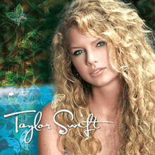

Primary School Pictures
She attended primary school at the Alvernia Montessori School.
An interesting fact that when she was only 9 months her mother placed her on a saddle,
from then on horse riding became her hobby.

If you are a true fan of Taylor Swift
then your are in the right place
you will find every information related to Taylor Swift here.
These are few pictures of our beloved Taylor Swift from her childhood.
As we can see she looks so cute and adorable.
She already had that charm of becoming a celebrity.
She attended primary school at the Alvernia Montessori School.
An interesting fact that when she was only 9 months her mother placed her on a saddle,
from then on horse riding became her hobby.
In High school, she won a national poetry competition on submitting a poem called “Monster in My Closet”.
It is her gift for poetry that helped her song-writing. The first song she wrote was “Lucky You”.
When Swift was about 12 years old, computer repairman and local musician Ronnie Cremer taught her to play the guitar.
Her talent was evident and so was the support of her parents.
Her mother spoke with Dan Dymtrow and with his assistance the twelve year old was cast in Abercrombie
& Fitch’s ‘Rising Stars’ campaign, and was subsequently interviewed by numerous mega record labels.
Taylor had 2 Siamese-Tabby mix cats called Indy and Eliehsen,
who didn't like anyone else in her family apart from Taylor.
She has also had two dobermans called Bug and Baby.
Taylor has two Scottish Fold cats named Meredith Grey and Olivia Benson.
She also has a Ragdoll kitten named Benjamin Button.
She has won several of the most prestigious awards as a vocalist,
which include 10 ‘Grammy Awards’, 23 ‘Billboard Music Awards’,
11 ‘Country Music Association Awards’, 8 ‘Academy of Country Music Awards’,
19 ‘American Music Awards’, 1 ‘Brit Award’ and an ‘Emmy Award’.
With her exceptional song-writing skills she has found a place for herself on ‘The Songwriters Hall of Fame.’


Taylor has done more than 100 live performances.
Through her performances, she expresses her passion for music and her love & respect for her fans.

| Album Name | Cover Art | Year |
|---|---|---|
| Taylor Swift |  | 2006 |
| Fearless |  |
2008 |
| Speak Now |  |
2010 |
| Red |  |
2012 |
| 1989 |  |
2014 |
| Reputation |  |
2017 |
| Folklore | 2020 | |
| Evermore | 2020 |
These are Taylor Swift's most popular songs